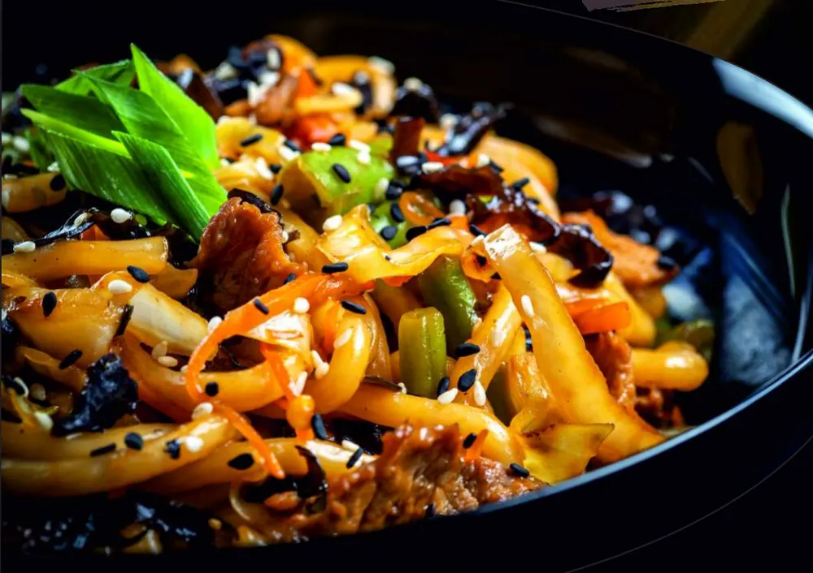
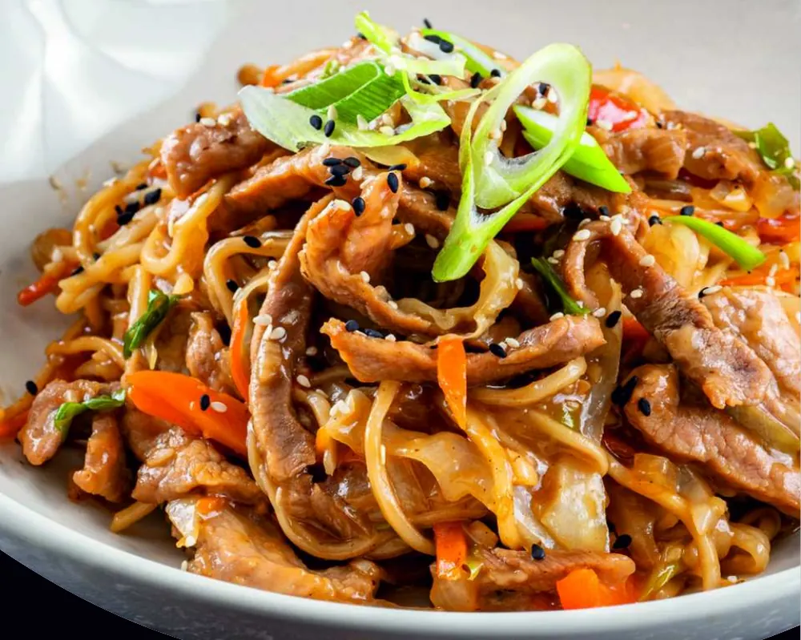

Stai în fața meniului și vezi opt tipuri de tăiței. Ramen, udon, pad thai, din ou, din orez… Care e diferența, de fapt? Pe scurt: materia primă, grosimea și textura. Mai jos găsești o comparație clară, ce sos se potrivește fiecăruia și cum îți compui bolul perfect la Wok and Noodles Galați.

Comparația pe scurt
| Tăiței | Din ce sunt făcuți | Textură | Conțin gluten? |
|---|---|---|---|
| Ramen | Făină de grâu | Subțiri, elastici, ușor ondulați | Da |
| Udon | Făină de grâu | Groși, moi, „cărnoși” | Da |
| Pad thai | Orez | Plați, fini, ușor lipicioși | Nu, în mod natural |
| Tăiței din orez | Orez | Fini, ușori | Nu, în mod natural |
| Tăiței din ou | Grâu și ou | Galbeni, fermi, clasicul „chinezesc” | Da |
| Soba | Hrișcă (adesea amestecată cu grâu) | Subțiri, gust ușor de nucă | De obicei da |
Coloana cu glutenul e orientativă: sosurile contează la fel de mult. Detalii în ghidul nostru fără gluten.
Fiecare tip de tăiței, explicat
Ramen — japonezii subțiri și elastici
Ramen sunt tăiței japonezi din făină de grâu, cu o elasticitate specifică. Cei mai mulți îi asociază cu supa ramen, dar merg foarte bine și trași la wok, cu legume și un sos consistent. La noi îi găsești ca bază de wok („tăiței ramen cu legume”, 26 lei) și în Umi Noodles, cu creveți, midii, ou și ciuperci shiitake.
Udon — groși, moi, sățioși
Udon sunt cei mai groși tăiței japonezi, tot din grâu. Au o textură moale și „cărnoasă”, care ține bine sosul. Sunt alegerea bună când ți-e foame de-adevăratelea. Îi găsești ca bază la wok sau în Yaki Udon (41 lei), cu porc, păstăi, ciuperci, varză și morcov.
Pad thai — tăițeii din orez ai Thailandei
Pad thai e de fapt numele unui fel de mâncare thailandez, dar în meniuri a ajuns să denumească și tăițeii plați din orez folosiți în el. Sunt fini, se impregnează bine cu sosul și sunt mai ușori decât cei din grâu. Pentru varianta picantă, încearcă Spicy Pad Thai cu pui (40 lei), cu broccoli, bambus, morcov și sos sriracha.
Tăiței din ou — clasicul „chinezesc”
Sunt tăițeii galbeni pe care majoritatea oamenilor și-i imaginează când spun „mâncare chinezească”. Au o textură fermă și rezistă bine la focul mare al wok-ului. Stau la baza unora dintre cele mai cerute preparate ale noastre: Tăiței teriyaki cu pui (41 lei), cu vită (43 lei) sau Noodles cu porc (41 lei).

Soba și noodles din cartof — pentru curioși
Soba sunt tăiței japonezi din hrișcă, cu un gust ușor de nucă (la noi, Soba Noodles, 42 lei). Korean Noodles (42 lei) sunt făcuți din cartof, cu o textură translucidă și ușor gumată, specifică bucătăriei coreene. Dacă ai mai încercat tot, începe cu ăștia.
Ce sos se potrivește
La wok ai de ales între șase sosuri. Câteva combinații care funcționează aproape întotdeauna:
| Sos | Gust | Merge cel mai bine cu |
|---|---|---|
| Teriyaki | Dulce-sărat, lucios | Tăiței din ou sau udon, cu pui sau vită |
| Sriracha | Iute, ușor usturoiat | Pad thai sau tăiței din orez, cu pui sau creveți |
| Sweet chili | Dulce și ușor picant | Tăiței din orez, cu creveți sau legume |
| Oyster | Umami, intens, sărat | Udon sau ramen, cu vită și ciuperci |
| Soia | Sărat, clasic | Orice bază — alegerea sigură |
| Curry | Aromat, cald | Tăiței din ou sau orez prăjit, cu pui |
Ce alegi, în funcție de poftă
- Ți-e foarte foame: udon cu vită și sos oyster.
- Vrei ceva ușor: tăiței din orez cu legume și sos de soia.
- Îți place iute: pad thai cu pui și sriracha.
- E prima dată: tăiței din ou cu pui și teriyaki, cel mai „sigur” gust.
- Vrei ceva special: Umi Noodles cu fructe de mare sau Korean Noodles.
- E frig afară: o supă cu tăiței (vită, porc sau pui), de la 29 lei porția de 650g.
Cum îți compui bolul la Wok and Noodles
Alegi baza — 26 lei / 350g
Tăiței din ou, din orez, din soia, udon, pad thai, ramen, mix de tăiței sau orez prăjit. Toate vin cu varză, morcov și ceapă verde.
Adaugi ingredientele
Pui sau porc (6 lei), vită sau creveți (10 lei), midii (8 lei), ciuperci shiitake sau urechi de lemn (5 lei), broccoli, ardei, bambus, zucchini, fasole verde, baby corn, arahide prăjite sau ou.
Alegi sosul
Teriyaki, sriracha, sweet chili, oyster, soia sau curry.
Un bol cu tăiței din ou, pui și teriyaki te costă 32 de lei. Unul cu udon, vită, ciuperci shiitake și oyster, 41 de lei. Vezi toate opțiunile în meniul complet.
Întrebări frecvente
Care e diferența dintre ramen și udon?
Ambele sunt tăiței japonezi din făină de grâu. Ramen sunt subțiri, elastici și ușor ondulați, iar udon sunt groși, moi și mai sățioși.
Din ce sunt făcuți tăițeii pad thai?
Tăițeii pad thai sunt făcuți din orez. Sunt plați și fini și nu conțin gluten în mod natural, dar sosul folosit poate conține.
Ce tăiței nu conțin gluten?
Tăițeii din orez și cei pad thai nu conțin gluten în mod natural. Ramen, udon și tăițeii din ou sunt din grâu. Atenție și la sosuri: sosul de soia, teriyaki și oyster conțin de obicei grâu, deci anunță la comandă.
Cât costă un bol de tăiței la Wok and Noodles Galați?
Baza costă 26 lei pentru 350g (tăiței cu varză, morcov și ceapă verde). Ingredientele se adaugă separat, de la 2 la 10 lei, iar sosul e inclus.
Ce tăiței sunt cei mai sățioși?
Udon, pentru că sunt cei mai groși. Combinați cu vită și sos oyster, sunt una dintre cele mai consistente porții din meniu.